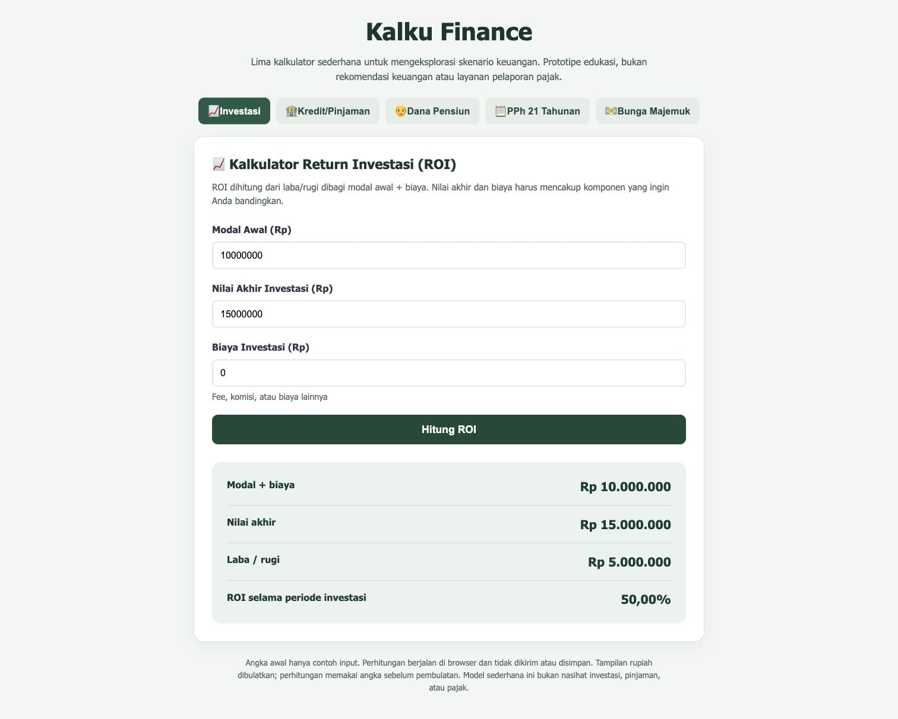

Kalku Finance
Exploring financial scenarios through a small, inspectable prototype.
Five calculators bring investment returns, loan repayments, retirement saving, a simplified tax estimate, and compound growth into one browser-based tool.

Project scope
I maintain Kalku Finance as a public learning prototype: a static HTML interface with a separate JavaScript calculation file. The scope is financial scenario exploration, with transparent assumptions and inspectable calculations.
The problem
A financial result depends on choices that are easy to overlook: whether fees belong in the investment base, when a savings contribution is made, or how an annual rate becomes a monthly rate. A calculator can produce a precise-looking number while leaving those choices unclear.
The design question: how can a small tool make financial scenarios easier to explore without hiding the assumptions?
Constraints and approach
The application runs in the browser without an account, a backend, or external libraries. A tabbed layout separates the five tasks; each calculator collects a small set of inputs and presents a result breakdown in the same page. After an input changes, that calculator’s previous result is cleared until recalculation.
I use the prototype to examine how input choices change an outcome, and whether the explanation makes that relationship clear.
The loan and savings models use a nominal annual rate divided by 12, with payments or deposits at month-end. These conventions are stated beside the relevant inputs.
- Investment return: compares the ending value with initial capital and entered fees. The investment base includes those fees.
- Loan repayment: estimates a fixed monthly payment from a principal amount, annual interest rate, and term.
- Retirement saving: estimates the regular savings needed to reach an entered target, using current savings, a time horizon, and an assumed return.
- Tax estimate: illustrates a simplified annual income-tax calculation from salary, allowances, deductions, and family status.
- Compound growth: projects a starting balance and regular monthly deposits under a constant return assumption.
Trade-offs
Easy to run, limited persistence
Static files make the prototype easy to inspect and open locally without a build process. Saved scenarios, accounts, and a history of comparisons remain outside its scope.
Simple scenarios, limited realism
Fixed rates and regular contributions keep the calculations understandable. They do not capture fluctuating returns, changing income, missed payments, or every product-specific fee.
Broad coverage, separate models
The calculators share an interface, but each needs its own assumptions, boundary checks, and explanation.
Verification and outcome
All 27 automated checks passed, covering reference calculations, zero-interest cases, tax brackets, invalid inputs, tab and error handling, and edits to numeric fields or tax status. The checks run automatically on pull requests and pushes to main. Browser checks exercised all five calculators and confirmed that a blank required field produces an error and receives focus.
- A Rp12 million loan over 12 months at 0% interest returns a Rp1 million monthly payment.
- A Rp10 million monthly salary, TK/0 status, and no allowances or entered contributions returns Rp3 million annual tax and a Rp250,000 monthly average.
The outcome is a public prototype; user adoption, decision quality, and time saved have not been measured.
Limits
The results describe scenarios under entered assumptions; they do not forecast market performance or model inflation. The tax view assumes one employer and 12 identical monthly pay periods. Its monthly average is annual tax divided by 12, not actual TER payroll withholding. Full assumptions and source links are documented in the repository.
Next steps
- Add side-by-side scenario comparisons to show how a change in one assumption affects the result.
- Expand reference calculations and boundary checks as the models change.
- Test whether people can explain the assumptions behind a result, then use that feedback to improve the interface.
My takeaway is to treat the explanation as part of the tool: what a number assumes matters as much as the number itself.